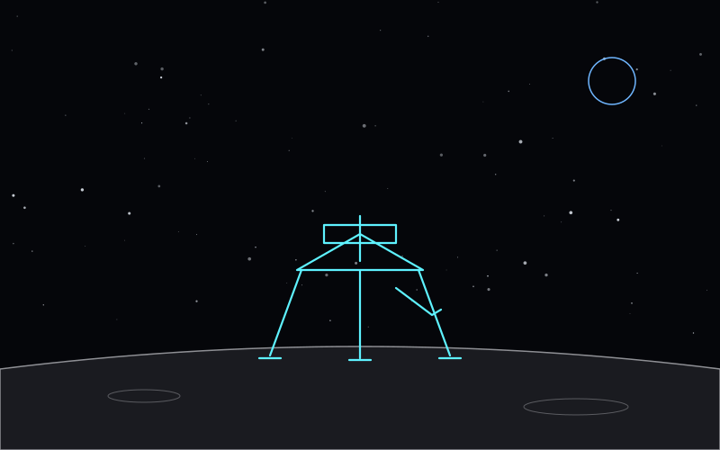

Capítulo 1 · Luna
Surveyor 1, 3, 5, 6 y 7
Los exploradores de avanzada

- Lanzamiento
- 17 de abril de 1967
- Llegada a la superficie
- 20 de abril de 1967
- Última señal
- 4 de mayo de 1967
Despertar
LUMI
Aquí duermen cinco exploradores que llegaron antes que las personas. Mantén pulsado para enviarles señal.
¿Señal? Comprobando patas… comprobando cámara… Hola. Somos los Surveyor.
Describir escena: La Luna vista desde la órbita, con cinco marcadores fantasma latiendo sobre los sitios de los Surveyor.
Quién soy
Somos cinco hermanos: Surveyor 1, 3, 5, 6 y 7. Nos mandaron con una pregunta muy seria: ¿aguanta el suelo de la Luna el peso de una nave? Había quien temía un mar de polvo que se lo tragara todo.
Bitácora
7 lanzamientos entre 1966 y 1968; 5 alunizajes suaves con éxito (Surveyor 1, 3, 5, 6 y 7).
Dato verificadoBitácora
Surveyor 2 se estrelló (septiembre de 1966); Surveyor 4 perdió contacto 2,5 minutos antes de tocar suelo (17 de julio de 1967).
Dato verificadoDescribir escena: Un aterrizador de tres patas gira despacio sobre el suelo gris; su pala y su cámara de TV brillan con un contorno cian.
El viaje
Salimos de Florida, uno tras otro, entre 1966 y 1968. No todos llegamos: dos hermanos se perdieron por el camino. Los que llegamos, llegamos por ellos también.
Describir escena: Un arco de luz se dibuja desde la Tierra hasta la Luna a medida que bajas.
La llegada
Mi aterrizaje fue… rebotado. Unas rocas brillantes engañaron a mi radar y mi motor no se apagó a tiempo. Boté una vez, boté dos, y a la tercera me quedé quieto.
Bitácora
Rocas muy reflectantes confundieron el radar; el motor no se apagó a unos 4,3 m; rebotó dos veces (10 m y 3 m) y se posó al tercer contacto.
Dato verificadoDescribir escena: El Surveyor 3 desciende con sus motores encendidos, rebota dos veces y se posa en la llanura.
El trabajo
Mira mi pala: rasca, empuja y golpea el suelo. ¿Sabes qué descubrí? Que el suelo lunar se parece a arena húmeda. Y que aguanta. ¡Aguanta!
El suelo aguanta una nave
6.326 fotos; con su pala cavó 4 zanjas e hizo 4 pruebas de carga y 13 de impacto. El suelo se parecía a arena húmeda, con una resistencia de unos 0,7 kg/cm², suficiente para un módulo lunar.
Dato verificadoEl salto del Surveyor 6
El 17 de noviembre de 1967 encendió sus motores 2,5 s, se elevó unos 3 m y se posó unos 2,5 m al oeste: el primer despegue desde la Luna.
Dato verificado≈ aprox.La química del Surveyor 5
Alunizó el 11 de septiembre de 1967 en 1,41° N, 23,18° E, en el Mar de la Tranquilidad, y analizó la química del suelo con un instrumento de dispersión alfa.
Dato verificado
Describir escena: Delante del aterrizador, la pala se mueve sobre el regolito y deja pequeños surcos.
Última señal
Cuando llegó la noche lunar, me quedé en silencio. Dos semanas de oscuridad son mucho frío para una máquina pequeña.
Bitácora
Último contacto del Surveyor 3: 4 de mayo de 1967.
Dato verificadoDescribir escena: La luz del Sol se apaga sobre la llanura y el aterrizador vuelve a ser un holograma tenue.
Legado
Dos años y medio después oí pasos. Dos astronautas del Apollo 12 vinieron a visitarme y se llevaron mi cámara a la Tierra para estudiarla. Yo había dicho que el suelo aguantaba… y ahí estaban, de pie.
LUMI
Gracias a ellos, las personas sabían dónde pisar.
Dónde estoy hoy
Las naves siguen en la Luna; las cámaras del Lunar Reconnaissance Orbiter han fotografiado a varias de ellas.
Dato verificadoCadena de herencia
Los datos de Surveyor permitieron elegir y aterrizar con seguridad en los sitios Apollo.
Describir escena: La cámara se aleja hasta ver la Luna entera y señala el siguiente sitio: el del Apollo 11.
Modo Pro· Más detalles técnicos, para mayores de 15
La resistencia del suelo medida por el Surveyor 3 (unos 0,7 kg/cm²) bastaba para el módulo lunar. El Surveyor 7 se envió a las tierras altas junto a Tycho porque los anteriores ya habían cubierto lo que Apollo necesitaba.
Datos
- Programa
- 5
- 7 lanzamientos entre 1966 y 1968; 5 alunizajes suaves con éxito (Surveyor 1, 3, 5, 6 y 7).
- Hermanos perdidos
- 2
- Surveyor 2 se estrelló (septiembre de 1966); Surveyor 4 perdió contacto 2,5 minutos antes de tocar suelo (17 de julio de 1967).
- Objetivo
- Apollo
- Obtener imágenes de cerca y comprobar si el terreno era seguro para aterrizajes tripulados.
- El gran miedo
- 1966
- Antes de 1966, algunos creían que la Luna estaba cubierta por un mar de polvo profundo que tragaría cualquier nave.
- Surveyor 1
- 2 de junio de 1966
- Alunizó el 2 de junio de 1966 a las 06:17:36 UTC en 2,45° S, 43,21° O (Flamsteed P) y tomó más de 10.000 fotos en su primer día lunar.
- Surveyor 3
- 20 de abril de 1967
- Lanzado el 17 de abril de 1967; alunizó el 20 de abril a las 00:04:17 UTC en 3,01° S, 23,34° O, en el Océano de las Tormentas.
- El rebote
- 3
- Rocas muy reflectantes confundieron el radar; el motor no se apagó a unos 4,3 m; rebotó dos veces (10 m y 3 m) y se posó al tercer contacto.
- Trabajo del Surveyor 3
- 6326
- 6.326 fotos; con su pala cavó 4 zanjas e hizo 4 pruebas de carga y 13 de impacto. El suelo se parecía a arena húmeda, con una resistencia de unos 0,7 kg/cm², suficiente para un módulo lunar.
- Zanjas
- 4
- La pala del Surveyor 3 cavó 4 zanjas.
- La visita del Apollo 12
- 180 m
- El módulo Intrepid se posó a unos 180 m; los astronautas recuperaron piezas, entre ellas la cámara y la pala, para estudiar casi 2,5 años de exposición.
- Surveyor 5
- 11 de septiembre de 1967
- Alunizó el 11 de septiembre de 1967 en 1,41° N, 23,18° E, en el Mar de la Tranquilidad, y analizó la química del suelo con un instrumento de dispersión alfa.
- Surveyor 6
- 29.952
- Lanzado el 7 de noviembre de 1967; alunizó el 10 de noviembre en 0,46° N, 1,37° O (Sinus Medii) y envió 29.952 imágenes.
- El salto del Surveyor 6
- 3 m
- El 17 de noviembre de 1967 encendió sus motores 2,5 s, se elevó unos 3 m y se posó unos 2,5 m al oeste: el primer despegue desde la Luna.
- Surveyor 7
- 10 de enero de 1968
- Lanzado el 7 de enero de 1968; alunizó el 10 de enero a las 01:05:36 UTC en 40,86° S, 11,47° O, en el borde norte del cráter Tycho, en las tierras altas.